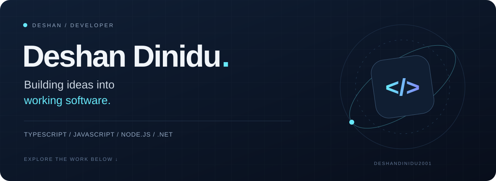

Local design preview · GitHub controls the final page typography and layout.

A little about me
Hi, I'm Deshan. I build across web, mobile, and backend systems with TypeScript and JavaScript. I'm part of the SpectraLeaf team, developing an IoT-based tea fermentation monitoring project with web and mobile applications.
I enjoy turning ideas into practical software, connecting interfaces to the systems behind them, and learning through building.
Selected work
Explore the gaming café system
A Node.js server manages session timers and sends lock/unlock commands to .NET 8 Windows clients over TCP using JSON messages.
Explore the code →Technologies used across my featured public projects:
TypeScriptJavaScriptReactNext.jsGSAPZustandReact NativeExpoNode.jsExpress.NETAWS SDKDynamoDBAWS Amplify
More from my workbench
Peraverse Kiosk →